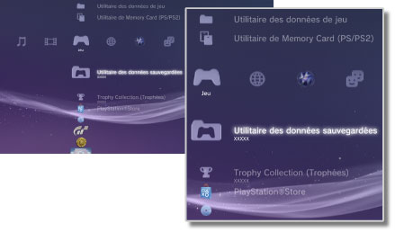

Jeu > Catégorie Jeu
Catégorie Jeu
Les icônes suivantes sont affichées sous  (Jeu). Les icônes affichées varient en fonction des conditions d'utilisation.
(Jeu). Les icônes affichées varient en fonction des conditions d'utilisation.

 |
PlayStation®Store | Pour afficher des informations provenant de PlayStation®Store. |
|---|---|---|
 |
Quitter le jeu | Pour quitter le logiciel au format PlayStation®3. Cette icône ne s'affiche que pendant le jeu. |
 |
(nom du titre) | Pour lire un titre de logiciel au format PlayStation®3. Une image est affichée lorsque l'icône est sélectionnée. |
  |
Disque au format PlayStation®2 | Pour lire un logiciel au format PlayStation®2. |
 |
Disque au format PlayStation® | Pour lire un logiciel au format PlayStation®. |
 |
Utilitaire des données sauvegardées | Pour copier / supprimer ou afficher des informations sur les données sauvegardées pour le logiciel au format PlayStation®3. |
 |
Utilitaire de Memory Card (PS / PS2) | Pour créer et attribuer des fentes pour des cartes mémoires internes afin d'enregistrer des données pour logiciel au format PlayStation®2 / PlayStation®. Vous pouvez également copier / supprimer ou afficher des informations sur les données sauvegardées. |
 |
Utilitaire des données de jeu | Des données supplémentaires peuvent être sauvegardées pour certains jeux. Vous pouvez supprimer ou afficher des informations sur les données. |
 |
Trophy Collection (Trophées) | Pour afficher les trophées que vous avez obtenus avec des jeux prenant en charge la fonctionnalité de trophées. Lorsque vous atteignez certains niveaux ou exécutez des tâches requises dans le jeu, vous pouvez obtenir des trophées. |
 |
(Logiciel au format PlayStation®3 our PlayStation®2 installé sur le disque dur) | Logiciel au format PlayStation®3 our PlayStation®2 installé sur le disque dur. Une image miniature du jeu est affichée. |
 |
(Données téléchargées sur le disque dur) | Cette icône s'affiche pour représenter les données de jeu ou d'extension téléchargées sur le disque dur. Lors du démarrage, les données sont installées. L'icône varie selon le type de données. |
Conseils
 ou
ou  est affiché pour le contenu limité par le contrôle parental. Pour lire le contenu, saisissez un mot de passe en quatre positions. Le mot de passe peut être défini sous
est affiché pour le contenu limité par le contrôle parental. Pour lire le contenu, saisissez un mot de passe en quatre positions. Le mot de passe peut être défini sous  (Paramètres) >
(Paramètres) >  (Paramètres sécurité).
(Paramètres sécurité). - Si vous connectez un périphérique non compatible avec la norme HDCP (High-bandwidth Digital Content Protection) au système à l'aide d'un câble HDMI, les données vidéo et/ou audio ne peuvent pas être reproduites à partir du système.
- Les Blu-Ray Discs protégés par droits d'auteur peuvent être reproduits à 1080p en utilisant un câble HDMI connecté à un périphérique compatible avec la norme HDCP.
- Dans de rares cas, il se peut que le système PS3™ soit incapable de lire correctement des disques et d'autres supports. Cela est principalement dû à des différences en matière de processus de fabrication ou d'encodage du logiciel.
Avis
- Il est possible que certains titres de logiciels au format PlayStation®2 ou PlayStation® fonctionnent différemment avec le système PS3™ par rapport aux systèmes PlayStation®2 ou PlayStation®, ou qu'ils ne fonctionnent pas correctement avec le système PS3™.
- En outre, certains logiciels au format PlayStation®2 ne peuvent pas être lus sur certains systèmes PS3™. Pour plus d'informations, consultez [Types de disques lisibles], visitez le site Web SCE de votre région ou reportez-vous à la documentation qui accompagne votre système PS3™.